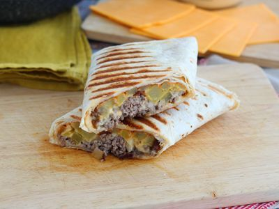
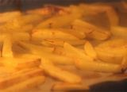
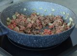
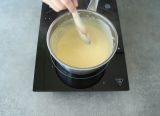
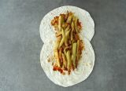
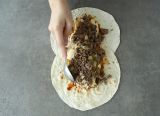
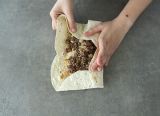

BIENVENU SUR NOTRE SITE D'APPRENTISSAGE EN CUISINE
Tacos

Sortez vos tortillas de blé, aujourd'hui on se prépare des French tacos ! Une recette à manger avec les doigts que toute la famille va adorer ;-) Des tacos généreusement garnis d'un mélange viande hachée + frites maison, le tout nappé d'une sauce
au fromage absolument irrésistible ! De quoi composer un parfait plateau-repas à déguster devant un bon film.
Ingredients
- 3 pommes de terre
- 1 c. à soupe d'huile d'olive
- Du sel
- 200 gr de bœuf haché
- 1 oignon
- 1 filet d'huile d'olive
- Du poivre
- 25 cl de crème
- 50 gr d'emmental
- 100 gr de cheddar
- 4 grandes tortillas de blé
Materiels
- 1 Machine à panini (optionnel)
- 1 Mixeur plongeant
Preparation
- Préparer les frites : Peler et couper les pommes de terre en frites, les mélanger avec l'huile d'olive et le sel et les mettre sur une plaque recouverte de papier sulfurisé au four 20 min à 220°C

- Préparer la viande : Faire revenir un oignon haché dans de l'huile d'olive, lorsqu'il est translucide, ajouter la viande hachée, le sel et le poivre. Remuer de temps en temps jusqu'à fin de cuisson.

- Préparer la sauce fromagère : Faire bouillir la crème dans une casserole, ajouter l'emmental, remuer jusqu'à ce qu'il soit fondu. Ajouter le cheddar coupé grossièrement et le poivre. Faire

- Le montage : Disposer les deux tortillas l'une légèrement sur l'autre. Étaler la sauce barbecue (ou autre dessus en évitant les bords). Mettre la moitié des frites au centre.

- Ajouter la moitié de la sauce fromagère par dessus puis ajouter la moitié de la viande hachée. Bien centrer les aliments (en formant un rectangle) pour rendre le pliage plus facile.

- Plier les bords l'un après l'autre en commençant par le bord du haut, puis celui vers vous, puis ceux des côtés en essayant de toujours bien tasser les aliments à l'intérieur.

- Retourner le tacos et le faire cuire dans une machine à panini pendant 3 minutes (ou dans une poêle 3 minutes de chaque côté en commençant par le côté du pliage pour le sceller).
Bonne degustation